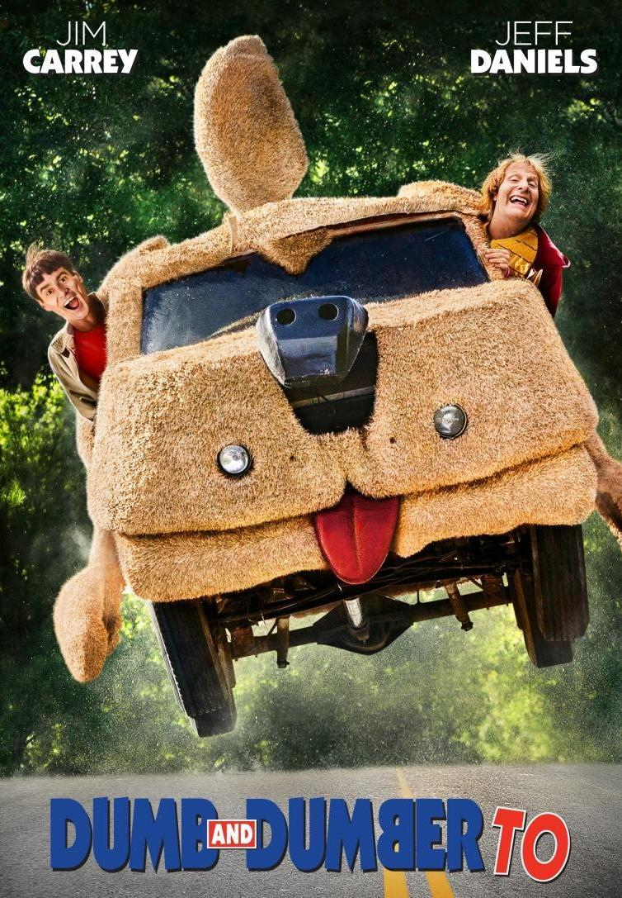

TONTO Y RETONTO 2

SINOPSIS
PELÍCULA NO RECOMENDADA A MENORES DE 12 AÑOS.
Jim Carrey y Jeff Daniels vuelven a protagonizar las aventuras de
los dos tontos más tontos del cine después del Éxito de la primera
película. En esta ocasión están dirigidos otra vez por Bobby y
Peter Farrelly. Han pasado ya veinte años desde que Harry y Lloyd
se conocieran y formaran el divertido dúo que nos hizo reír con
sus disparatadas ocurrencias, pero ninguno de los dos parece haber
madurado. Ahora, a Harry le han diagnosticado un problema de riñon
y necesita un transplante. Al mismo tiempo descubre que tiene una
hija que apenas conoce y decide ir a buscarla para pedirle que
done uno de sus órganos. Para esta aventura necesitará la ayuda de
su inseparable Lloyd. Sin embargo, éste no se encuentra en muy
buen estado físico ni psicológico desde que Mary le rechazó. Su
viaje a través de Estados Unidos les llevará desde un hospital
psiquiátrico hasta un congreso donde están reunidas las mentes más
brillantes del mundo. Bueno, no exactamente...
REPARTO
✩14 de noviembre de 2014 en cines / 1h 49min / Comedia
✩Dirigida por Bobby Farrelly, Peter Farrelly
✩Guión Sean Anders, Mike Cerrone
✩Reparto Jim Carrey, Jeff Daniels, Rob Riggle
✩Título original Dumb and Dumber To
TRÁILERS